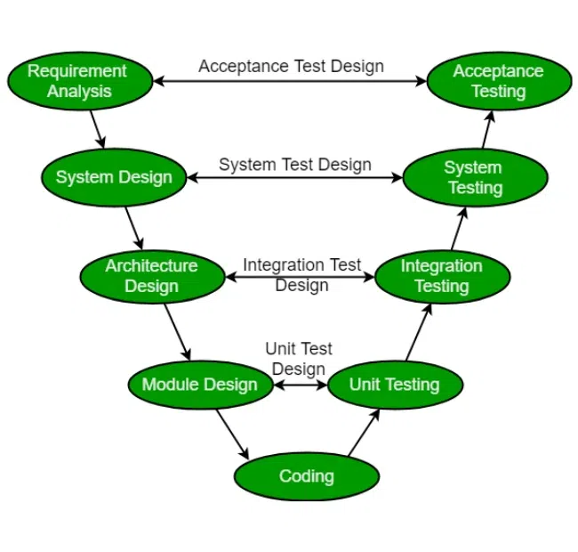

V-Shape on tarkvaraarendusemetoodika mis koosneb testimist ja valideerimist kõigi arendusetappide käigus, mille käigus
tekib V-tähe kujuline struktuur, mis hõlmab mitmesuguseid etappe mida detailselt analüüsitakse. See mudel lihtne hallata
tänu mudeli paindlikuse ja passiivse vea jälgimise tõttu, mis laseb arendajatel vigasi varakult tuvastada.
V-Shape mudelil on kaks kokku jooksvat etappe, mis hõlmavad verifitseerimist ja valideerimist. Verifitseerimis etappides
tegeletakse klientide nõuete kogumise ja analüüsiga. Selle etappi eesmärk on selgeks teha projekti ulatus, et kõik meeskonna
liikmed oleksid ühel meelel. Sooritatakse staatilist ülevaatust, mille käigus koodi ei rakendata ja kontrollitakse ka määratud
nõudede seisundit. V-shapeil on mitu verifitseerimisfaasi: ärinõuete analüüs, süsteemi disain, arhitektuurne projekteerimine ja
mooduli disain.
Valideerimisfaasis tegeletakse dünaamilistele analüüsimeetoteid ning koodi täitmise teel tehtavaid teste. Selle käigus hinnatakse
tarkvara pärast arendusetapi lõppu, et teha kindlaks, kas tarkvara vastab kliendi ootustele ja nõuetele. V-Shape Valideerimisfaas
koosneb: üksiktestid, integratsioonitestid, süsteemitestid ja kasutaja vastuvõtutestid (UAT).
Pärast verifitseerimist ja valideerimist läbides algab koodimine kasutates eelmistest etappidest saadud mooduleid ning enne lõpliku
versiooni reposse lisamist läbib kood mitumeid koodikontrolle ja optimeeritakse optimaalse jõudluse saavutamiseks.

Testimine toimub järkjärgulises perspektiivis kus iga etapi lõpetamisega muutuvad kindlaks määratud nõuded detailsemaks ja täpsemaks.
Iga projekti edukas kavandamine eeldab nii andmete kui ka protsesside integreerimist ja ühtsust. Protsessielemendid tuleb kindlaks
määrata iga nõude puhul.
V-Shape on piisavalt paindlik, et sobida igasuguste IT-projektidega, olenemata nende suurusest, keerukusest või kestusest.
| HEAD | VEAD |
|---|---|
| Lihtne kasutus | Jäik ja mitte paindlik |
| Suur eduvõimalus | Varaseid prototüüpe ei toodeta |
| Aktiivne vigade jälgimine | Kui tekivad muudatused euleb kogu dokument uuendada |
| Hea väikestes projektides |